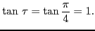

Angle between the radius vector and tangent
Angle between the radius vector drawn to a point on a curve
and the tangent to the curve at that point. Let the equation of the
curve in polar coordinates be
.
Let P be any fixed point
on the curve. If  , which we assume
as the independent variable, takes on an increment
, which we assume
as the independent variable, takes on an increment
 , then
, then  will take on a corresponding increment
.
will take on a corresponding increment
.
Figure 6.8:
Angle between the radius vector drawn to a point on a curve and the tangent to the curve at that point.
|
Denote by Q the point
. Draw PR perpendicular to OQ. Then
,
, and
.
Also,
Denote by the angle between the radius vector OP and the
tangent PT. If we now let
approach the limit zero, then
- (a)
- the point Q will approach indefinitely near P;
- (b)
- the secant PQ will approach the tangent PT as a limiting position; and
- (c)
- the angle PQR will approach as a limit.
Hence
(since, from 39, §1.1,
).
Dividing both numerator and denominator by
, this is
Since
also
and
by §3.10, we have
 |
(6.12) |
From the triangle OPT we get
 |
(6.13) |
Having found  , we may then find
, the slope of the tangent
to the curve at P. Or since, from (6.13),
, we may then find
, the slope of the tangent
to the curve at P. Or since, from (6.13),
we may calculate
from (6.12) and substitute in the formula
Example 6.7.1 Find
and
in the cardioid
. Also find the slope at

.
Solution.
.
Substituting in (6.12) gives
by items 39 and 37, §
1.1. Since
, we have
.
Substituting in (6.13),
.
so

To find the angle of intersection of two curves  and
and  whose
equations are given in polar cooordinates, we may proceed as follows:
whose
equations are given in polar cooordinates, we may proceed as follows:
Figure 6.9:
The angle between two curves.
|
angle TPT = angle OPT - angle OPT,
or,
. Hence
 |
(6.15) |
where
and
are calculated by (6.12)
from the two curves and evaluated for the point of intersection.
Example 6.7.2 Find the angle of of intersection of the curves

,

.
Solution. Solving the two equations simultaneously, we get at the point of intersection
From the first curve, using (
6.12),
for
.
From the second curve,
for
.
Substituting in ((6.15),
therefore
.
david joyner
2008-08-11

![\includegraphics[height=6cm,width=9cm]{polar-tangent.eps}](img1795.png)